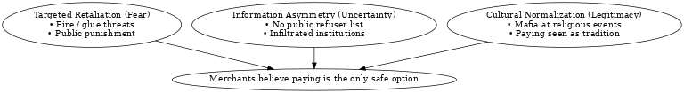
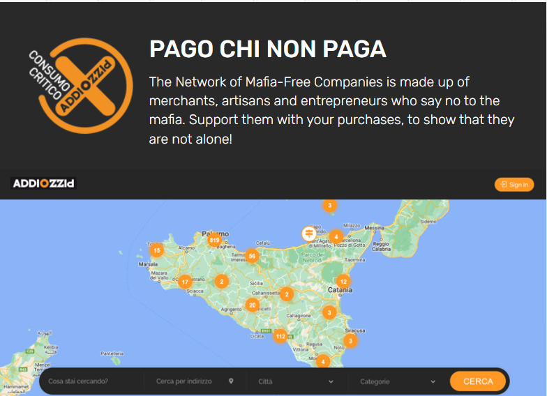
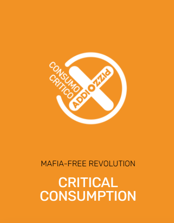
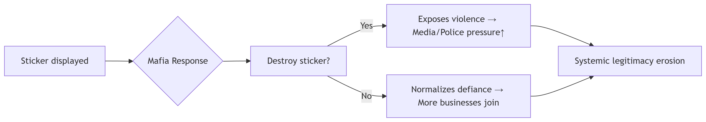
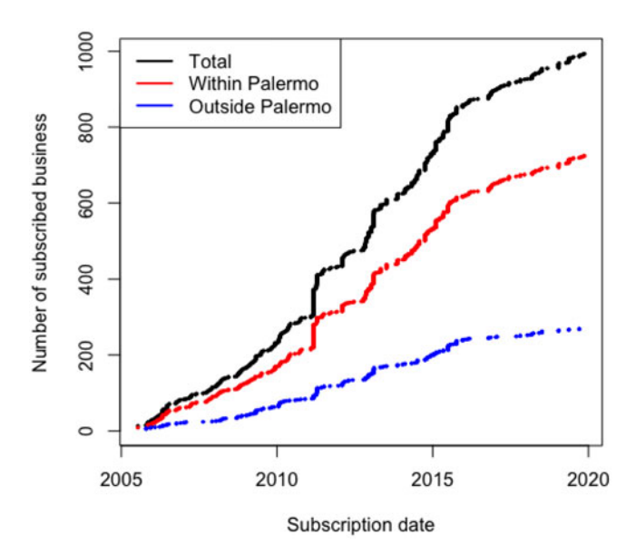

From Invisible Taxes to Public Signs — A Bullet to fight Mafia
Though cinema frames the Mafia in tailored suits, vintage Cadillacs, and solemn church parades, the reality in Palermo is cruel. The same men who carry statues at religious feasts also carry glue guns at night. A lot of losses are incurred because merchants don’t pay protection money.That protection money—called pizzo—became Sicily’s unofficial tax on trade.
Paying protection money is not something everyone is willing to do just to survive. In 2004 a student group, Addiopizzo (“Good‑bye, Protection Money”), chose a different weapon: data. By turning whispers into audited numbers, and releasing those numbers in timed waves, they rewired what Sicilians believed, where they shopped, and how much the Mafia earned. Addiopizzo’s action showed a great impact that transparency could make.
What is transparency?
Organizational transparency means disclosing key internal data—such as finances, membership, or decisions—to external stakeholders and civil society. (Madsen, 2009; Vaccaro & Patino Echeverri, 2010)
Addiopizzo made that transparency dynamic.
Why merchants feel they must pay?
The Mafia maintains control not only through violence, but through a three-layer system of coercion, confusion, and culture:
 Fig 1. Reasons for protection money
- Targeted Retaliation (Fear): Businesses that refuse to pay are sometimes attacked and damaged. This can spread the message that others will suffer the same, although attacks are rare (Scaglione & Punzo, 2025).
- Information Asymmetry (Uncertainty): Mafia groups infiltrate the police and officials. Victims believe they can’t rely on the state for help. Merchants suppose everyone is complying.
- Cultural Normalization (Legitimacy): Mafia members appear at religious celebrations. Even funerals are a place they can be found. They do not appear as criminals. They appear as so-called “protectors”. This makes extortion seem acceptable, even normal.
How Addiopizzo attacked the Mafia?
–Addiopizzo makes hidden information visible.
Information disclosure is meant to address the four issues: limited moral imagination, organizational legitimacy, resistance to change and threat of Mafia attacks. (Vaccaro, 2012)
Turning Consumption into weapons
1. Pizzo-free map: reducing the fearness
One of Addiopizzo’s most effective tools was also its simplest: a publicly available list of businesses that had refused to pay protection money. Updated regularly and organised by name, location and industry, the list did more than just inform; it changed public expectations.
 Fig 2. Pizzo-free mechants map from Addiopizzo.org (https://addiopizzo.org/en/what-we-do/critical-consumption/)
For merchants, it broke the silence. Direct, verifiable evidence that refusal was possible, even common, was provided in the list. It challenged “everyone pays”, the dominant belief, which is a key barrier that Vaccaro (2012) identifies as a “limited moral imagination”.
For consumers, the supply chain was rewired. Shoppers could actively support certified businesses, turning everyday purchases into anti-Mafia statements. This behavioral loop turned the market into a tool of resistance.
As more firms joined, the economic space available for extortion decreased. The effect was measurable.
2. Anti-Racket Stickers: Making resistance seen
Addiopizzo did more than just publish lists. They weaved anti-extortion messages into daily economic life. Its stickers, bearing the simple, black-and-white logo Pizzo-Free, appeared on shop windows, product packaging and sales receipts.

Fig 3. Addiopizzo Sticker from Addiopizzo.org (https://addiopizzo.org/en/what-we-do/critical-consumption/)
Each sticker performed three functions:
Spatial Insurgency Tools: Converting private storefronts into public declarations of resistance, remapping commercial space as anti-Mafia territory.
Violence Exposure Triggers: Vandalism by Mafia actors turned implicit threats into documented evidence, forcing invisible coercion into legal/political view.
Real-Time Trust Networks: Sustained sticker visibility created a live “ethical cartography,” enabling consumers to identify safe businesses at a glance.
 Fig 4. How stickers work
From 2005 to 2019, Addiopizzo’s members rose from 1,214 entrepreneurs and 13,376 consumers to include large corporations.(see Figure 4, Lipari & Andrighetto, 2020).
 Fig 5. Subscription to Addiopizzo from 2005 until 2019. Source of data comes directly from Addiopizzo dataset. Elaboration of the authors.(Lipari & Andrighetto, 2020)
In 2007, the association counted 210 traders and entrepreneurs as members and over 9,000 consumers committed to buying only at shops belonging to the “pizzo-free” list.(Wikipedia: https://en.wikipedia.org/wiki/Addiopizzo)
In practice, it became a low-cost, high-impact governance mechanism driven by disclosure rather than force.
Publishing both the Mafia and itself
Table 1 shows its disclosure project breaks down the mafia’s control over the economy. They publicise both the Mafia’s message and their own, to avoid being attacked by the Mafia. The most significant innovation is the transition of the two types of information into visual formats, turning everyday consumption into a means of collective resistance:
Table 1: Typologies of disclosed information and related issues to be fixed
| Information typology | Information medium | Legitimacy | Resistance to change (consumers) | Resistance to change (firms) | Threat of violence (Mafia attacks) | Limited moral imagination |
|---|---|---|---|---|---|---|
| Moral intentions and objectives | Newspapers and lately the website | ✔ | ||||
| Current activities and initiatives | Website, TVs, Posters, newspapers, and magazines | ✔ | ✔ | ✔ | ||
| List of consumers and firms adhering to the initiative and activist members of the association | Website and meeting with the press | ✔ | ✔ | ✔ | ||
| Budget & other internal activities | Website | ✔ | ||||
| Invitations to join Addiopizzo | Physical stickers and internet banners | ✔ | ✔ | ✔ | ||
| Mafia’s attacks against people related to the anti-Mafia movement | Website, newspapers, and magazines | ✔ | ✔ | ✔ | ✔ | ✔ |
| Information “no-one wants to say”: Mafia’s illegal activities | Website, newspapers, magazines, and conferences | ✔ | ✔ | ✔ | ✔ | ✔ |
| Ethical certifications | Stickers | ✔ | ✔ | ✔ | ✔ | ✔ |
Notes:
1.This table systematically classifies the types of information that Addiopizzo has made public.
2.This table is from Table 3, Vaccaro 2012.
Other efforts
Addiopizzo provided legal aid and psychological support.They also worked with schools to change cultural ideas around pizzo. These actions created a support structure for disclosure, making transparency strategic.
Conclusion
By disclosing extortion data and embedding resistance in everyday objects, the movement exposed the Mafia’s reliance on fear and silence. It informed and enabled action.
Addiopizzo shows that dynamic transparency can challenge organised crime. In a situation where official organisations were not working well, it created a system where people could be held responsible. This showed that if people are aware of what is happening, they can stop crime.
References: Addiopizzo.org: https://addiopizzo.org/en/what-we-do/critical-consumption/
Lipari, F., & Andrighetto, G. (2021). The change in social norms in the Mafia’s territories: the anti-racket movement of Addiopizzo. Journal of Institutional Economics, 17(2), 227–242. https://doi.org/10.1017/S1744137420000399
Madsen, P. (2009). Corporate dynamic transparency: the new ICT-driven ethics? Ethics and Information Technology. https://doi.org/10.1007/S10676-009-9190-1
Scaglione, A., Punzo, V. (2025). Shaping mafia power through extortion: the evolution of the pizzo in sicily. Crime Law Soc Change 83, 28 https://doi.org/10.1007/s10611-025-10212-x
Vaccaro, A., Patiño Echeverri, D. (2010). Corporate Transparency and Green Management. J Bus Ethics 95, 487–506 https://doi.org/10.1007/s10551-010-0435-z
Vaccaro, A. (2012).To Pay or Not to Pay? Dynamic Transparency and the Fight Against the Mafia’s Extortionists. J Bus Ethics 106, 23–35 https://doi.org/10.1007/s10551-011-1050-3
Wikipedia: https://en.wikipedia.org/wiki/Addiopizzo
ipari, F., & Andrighetto, G. (2021). The change in social norms in the Mafia’s territories: The anti-racket movement of Addiopizzo. Journal of Institutional Economics, 17(2), 227–242. https://doi.org/10.1017/S1744137420000399
Madsen, P. (2009). Corporate dynamic transparency: The new ICT-driven ethics? Ethics and Information Technology, 11(2), 89–100. https://doi.org/10.1007/s10676-009-9190-1
Scaglione, A., & Punzo, V. (2025). Shaping Mafia power through extortion: The evolution of the pizzo in Sicily. Crime, Law and Social Change, 83(28). https://doi.org/10.1007/s10611-025-10212-x
Vaccaro, A., & Patiño Echeverri, D. (2010). Corporate transparency and green management. Journal of Business Ethics, 95(3), 487–506. https://doi.org/10.1007/s10551-010-0435-z
Vaccaro, A. (2012). To pay or not to pay? Dynamic transparency and the fight against the Mafia’s extortionists. Journal of Business Ethics, 106(1), 23–35. https://doi.org/10.1007/s10551-011-1050-3